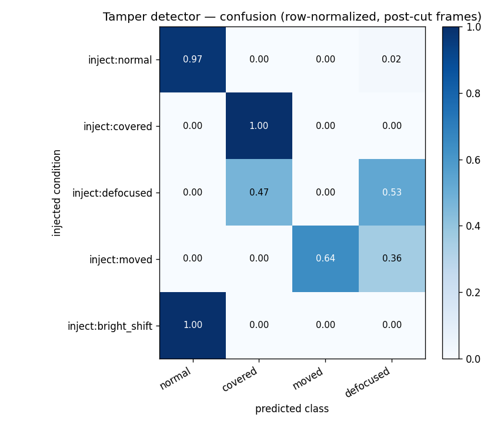
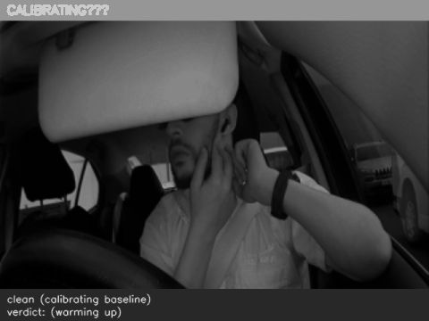

Camera Tampering Detection
Detecting a covered, moved, or defocused in-cabin camera. Evaluated on synthetic tamper injected into real cabin clips (6 clips, KA2068).
1 · Results
| injected condition | detection | false alarm | latency (frames) |
|---|---|---|---|
| Normal (control) | 98% | 9% | — |
| Covered | 100% | 9% | 0 |
| Defocused | 53% | 9% | 0 |
| Moved | 64% | 9% | 0 |
| Benign lighting change | 100% | 9% | — |
Covered is detected reliably and a benign lighting change is correctly ignored (the key false-alarm test). Moved and defocused are partial at the per-frame level — single-frame flicker on a sustained event — which a temporal persistence stage (debounce) is designed to smooth. Numbers are on synthetic tamper from one camera; they measure detector behaviour, not field accuracy.

2 · Synthetic tampering — examples
Each clip runs clean (the detector calibrates a “normal” baseline), then the tamper engages. The overlay shows the detector's live verdict and the applied tamper + severity.

Lens blocked / taped — the image goes flat: sharpness, edges and intensity spread all collapse.

Out-of-focus optics — sharpness and edges collapse, but the overall brightness spread is preserved.

Camera knocked / re-aimed — the whole view shifts vs the calibrated reference; structure itself stays sharp.

A lighting change, not tampering (day/night, glare, IR illuminator). The detector should stay normal — brightness changes but image structure does not.
3 · How it works
Covered
Sharpness, edge content and intensity spread all collapse — the field of view is obstructed.
Defocused
Sharpness and edge content fall while the intensity spread is retained — the scene is present but out of focus.
Moved
The field of view shifts relative to the reference while image sharpness is preserved — the camera has been repositioned.
Lighting change
Overall brightness changes but image structure does not — correctly treated as normal operation, not tampering.
Camera tampering detection — synthetic-tamper evaluation on in-cabin footage.